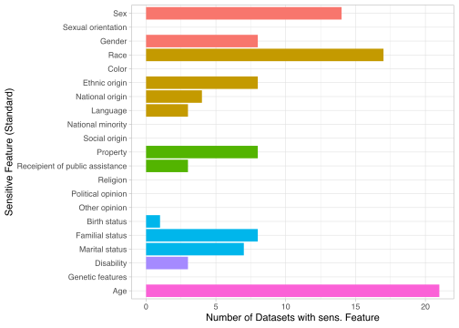
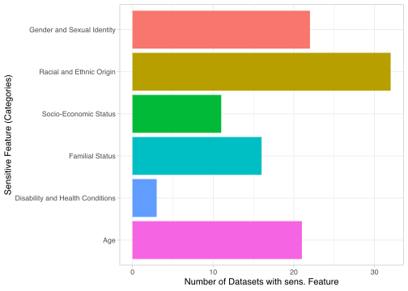
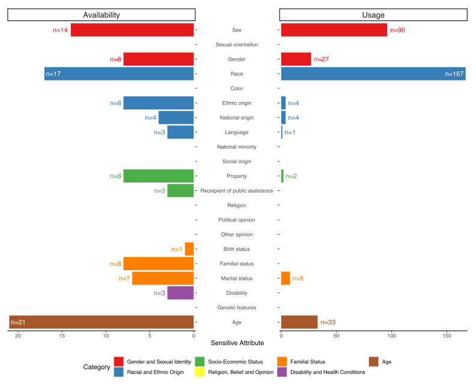
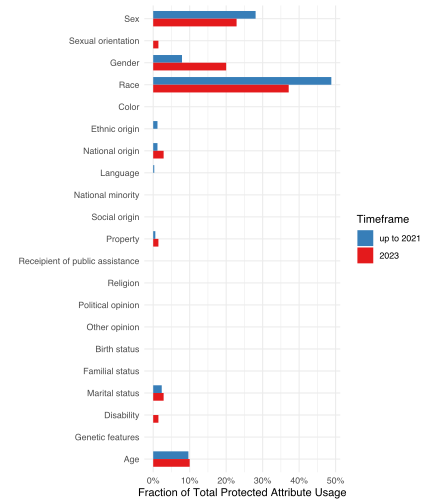

source("../R/setup.R")Section 3: Neglected Identities
Load Data
datasets_raw <- load_datasets()Rows: 65 Columns: 17
── Column specification ────────────────────────────────────────────────────────
Delimiter: ","
chr (15): new_dataset_id, task_id, dataset_id, description, affiliation, tas...
dbl (1): dataset_sub_id
lgl (1): variants
ℹ Use `spec()` to retrieve the full column specification for this data.
ℹ Specify the column types or set `show_col_types = FALSE` to quiet this message.Helper Function(s)
save_sensitive <- function (data, name = NULL) {
dir <- file.path(data_dir, "intermediate", "sensitive")
if (is.null(name)) { name <- enexpr(data) }
dir.create(dir, showWarnings = F)
write_csv(
data,
file.path(dir, paste0(name, ".csv"))
)
}Standard Categories
Generate the list of standard categories (incl. the mapping to nice labels).
standard_labels <- tibble::tribble(
~cat, ~sensitive_standard_label,
"GSI", "Sex",
"GSI", "Sexual orientation",
"GSI", "Gender",
"REO", "Race",
"REO", "Color",
"REO", "Ethnic origin",
"REO", "National origin",
"REO", "Language",
"REO", "National minority",
"SES", "Social origin",
"SES", "Property",
"SES", "Receipient of public assistance",
"RBO", "Religion",
"RBO", "Political opinion",
"RBO", "Other opinion",
"FST", "Birth status",
"FST", "Familial status",
"FST", "Marital status",
"DHC", "Disability",
"DHC", "Genetic features",
"AGE", "Age"
) %>%
mutate(across(everything(), ~ factor(., levels = unique(.)))) %>%
rename(
sensitive_cat = cat
) %>%
mutate(
sensitive_standard = sensitive_standard_label %>%
str_to_lower() %>%
str_replace_all(" ", "_")
) %>%
relocate(sensitive_cat)
save_sensitive(standard_labels)
show(standard_labels)| sensitive_cat | sensitive_standard_label | sensitive_standard |
|---|---|---|
| GSI | Sex | sex |
| GSI | Sexual orientation | sexual_orientation |
| GSI | Gender | gender |
| REO | Race | race |
| REO | Color | color |
| REO | Ethnic origin | ethnic_origin |
| REO | National origin | national_origin |
| REO | Language | language |
| REO | National minority | national_minority |
| SES | Social origin | social_origin |
| SES | Property | property |
| SES | Receipient of public assistance | receipient_of_public_assistance |
| RBO | Religion | religion |
| RBO | Political opinion | political_opinion |
| RBO | Other opinion | other_opinion |
| FST | Birth status | birth_status |
| FST | Familial status | familial_status |
| FST | Marital status | marital_status |
| DHC | Disability | disability |
| DHC | Genetic features | genetic_features |
| AGE | Age | age |
Higher-Level Categories
These are aggregated categories to allow for basic nesting of labels.
sensitive_categories <- tribble(
~sensitive_cat, ~sensitive_cat_label,
"GSI", "Gender and Sexual Identity",
"REO", "Racial and Ethnic Origin",
"SES", "Socio-Economic Status",
"RBO", "Religion, Belief and Opinion",
"FST", "Familial Status",
"DHC", "Disability and Health Conditions",
"AGE", "Age",
"MSC", "Miscellaneous"
) %>%
mutate(across(everything(), ~ factor(., levels = unique(.))))
sensitive_categories %>% show()| sensitive_cat | sensitive_cat_label |
|---|---|
| GSI | Gender and Sexual Identity |
| REO | Racial and Ethnic Origin |
| SES | Socio-Economic Status |
| RBO | Religion, Belief and Opinion |
| FST | Familial Status |
| DHC | Disability and Health Conditions |
| AGE | Age |
| MSC | Miscellaneous |
Availability
Standardize labels regarding the availability of protected attributes.
sensitive_availability <- datasets_raw %>%
filter(STATUS == "DONE") %>%
select(
dataset_id,
affiliation,
sensitive_standard
) %>%
distinct() %>%
separate_rows(sensitive_standard, sep = ";") %>%
mutate(
sensitive_standard = str_trim(sensitive_standard) %>%
str_replace_all(" ", "_")
) %>%
# Drop empty lines
filter(
(sensitive_standard != "") & !is.na(sensitive_standard)
) %>%
# Do a basic mapping into the standard categories
mutate(
sensitive_standard = sensitive_standard %>%
case_match(
"none" ~ NA,
"nationality" ~ "national_origin",
"ethnicity" ~ "ethnic_origin",
"familial" ~ "familial_status",
"family_status" ~ "familial_status",
"martial_status" ~ "marital_status",
"income" ~ "property",
.default = sensitive_standard
)
) %>%
filter(!is.na(sensitive_standard))Check for issues with categories.
rows_with_issues <- sensitive_availability %>%
anti_join(standard_labels) %>%
distinct(sensitive_standard)Joining with `by = join_by(sensitive_standard)`stopifnot(nrow(rows_with_issues) == 0)
rows_with_issues# A tibble: 0 × 1
# ℹ 1 variable: sensitive_standard <chr>Usage
Standardize labels regarding the usage of protected attributes.
library(jsonlite)
Attaching package: 'jsonlite'The following object is masked from 'package:purrr':
flattenparse_json <- function(json_string) {
parsed_json <- try(fromJSON(json_string))
if (class(parsed_json) == "try-error") {
# Error when parsing
return(list("parsing-error"))
} else {
return(parsed_json)
}
}
papers <- load_papers()Rows: 280 Columns: 14── Column specification ────────────────────────────────────────────────────────
Delimiter: ","
chr (14): new_dataset_id, name, paper, org_id, task_id, task, data_spec, STA...
ℹ Use `spec()` to retrieve the full column specification for this data.
ℹ Specify the column types or set `show_col_types = FALSE` to quiet this message.papers_parsed_raw <- papers %>%
filter(info_protected %in% c("Yes", "Guessable")) %>%
mutate(
sensitive_parsed = col_protected %>%
map(~ parse_json(.))
) %>%
unnest(col_protected)
papers_parsed <- papers_parsed_raw %>%
# Turn the nested lists into separate rows
mutate(
sensitive_raw = sensitive_parsed %>%
map(~ unname(unlist(.)))
) %>%
unnest(sensitive_raw) %>%
# Get
mutate(
sensitive_standard = sensitive_raw %>%
case_match(
"nationality" ~ "national_origin",
"native-country" ~ "national_origin",
"employment" ~ "other",
"ethnicity" ~ "ethnic_origin",
"relationship_status" ~ "other",
"alcohol_consumption" ~ "other",
"geography" ~ "other",
"profession" ~ "other",
"income" ~ "property",
.default = sensitive_raw
)
) %>%
# Drop all "other" categories
filter(sensitive_standard != "other")
sensitive_usage <- papers_parsed %>%
select(
new_dataset_id,
paper,
sensitive_standard
)Check for any issues with categories in the usage data.
papers_parsed %>%
select(new_dataset_id, paper, sensitive_standard, sensitive_parsed, col_protected) %>%
filter(sensitive_standard == "parsing-error") %>%
select(-starts_with("sensitive_"))# A tibble: 0 × 3
# ℹ 3 variables: new_dataset_id <chr>, paper <chr>, col_protected <chr>papers_with_issues <- papers_parsed %>%
anti_join(standard_labels) %>%
distinct(sensitive_standard, .keep_all = T) %>%
select(starts_with("sensitive"), new_dataset_id, name, paper)Joining with `by = join_by(sensitive_standard)`stopifnot(nrow(papers_with_issues) == 0)
papers_with_issues# A tibble: 0 × 6
# ℹ 6 variables: sensitive_parsed <list>, sensitive_raw <chr>,
# sensitive_standard <chr>, new_dataset_id <chr>, name <chr>, paper <chr>Plots
Availability
standard_labels %>%
left_join(
sensitive_availability %>%
count(sensitive_standard)
) %>%
left_join(
sensitive_categories
) %>%
filter(!is.na(sensitive_standard)) %>%
replace_na(list(n = 0)) %>%
ggplot(aes(
x = n,
y = sensitive_standard_label %>% fct_rev(),
fill = sensitive_cat_label
)) +
geom_col() +
labs(
x = "Number of Datasets with sens. Feature",
y = "Sensitive Feature (Standard)"
) +
theme(legend.position = "none")Joining with `by = join_by(sensitive_standard)`
Joining with `by = join_by(sensitive_cat)`

Categories
sensitive_availability %>%
left_join(standard_labels) %>%
left_join(sensitive_categories) %>%
count(sensitive_cat_label) %>%
filter(!is.na(sensitive_cat_label)) %>%
replace_na(list(n = 0)) %>%
ggplot(aes(
x = n,
y = sensitive_cat_label %>% fct_rev(),
fill = sensitive_cat_label
)) +
geom_col() +
labs(
x = "Number of Datasets with sens. Feature",
y = "Sensitive Feature (Categories)"
) +
theme(legend.position = "none")Joining with `by = join_by(sensitive_standard)`
Joining with `by = join_by(sensitive_cat)`

Final Combined Plot
Prepare data for combined plot
sensitive_counts <- standard_labels %>%
left_join(sensitive_categories) %>%
left_join(
sensitive_availability %>%
count(sensitive_standard, name = "n_availability")
) %>%
left_join(
sensitive_usage %>%
count(sensitive_standard, name = "n_usage")
) %>%
mutate(across(starts_with("n_"), ~ replace_na(., 0)))Joining with `by = join_by(sensitive_cat)`
Joining with `by = join_by(sensitive_standard)`
Joining with `by = join_by(sensitive_standard)`sensitive_counts# A tibble: 21 × 6
sensitive_cat sensitive_standard_label sensitive_standard sensitive_cat_label
<fct> <fct> <chr> <fct>
1 GSI Sex sex Gender and Sexual …
2 GSI Sexual orientation sexual_orientation Gender and Sexual …
3 GSI Gender gender Gender and Sexual …
4 REO Race race Racial and Ethnic …
5 REO Color color Racial and Ethnic …
6 REO Ethnic origin ethnic_origin Racial and Ethnic …
7 REO National origin national_origin Racial and Ethnic …
8 REO Language language Racial and Ethnic …
9 REO National minority national_minority Racial and Ethnic …
10 SES Social origin social_origin Socio-Economic Sta…
# ℹ 11 more rows
# ℹ 2 more variables: n_availability <int>, n_usage <int># Prepare color scales for plot
color_scale_sensitive_cat <- sensitive_categories %>%
nrow() %>%
RColorBrewer::brewer.pal("Set1")
names(color_scale_sensitive_cat) <- sensitive_categories$sensitive_cat_label
# Switch Religion w/ Health
temporary_color <- color_scale_sensitive_cat["Religion, Belief and Opinion"]
color_scale_sensitive_cat["Religion, Belief and Opinion"] <- color_scale_sensitive_cat["Disability and Health Conditions"]
color_scale_sensitive_cat["Disability and Health Conditions"] <- temporary_color
color_scale_sensitive_cat_w <- c("white" = "#FFFFFF", color_scale_sensitive_cat)
sensitive_counts %>%
pivot_longer(starts_with("n_")) %>%
mutate(
# Reverse for one side
flip = name == "n_availability",
# the brackets turn binary flip into: -1 or 1
flip_value = value * (1 - 2 * flip),
# Rename for plot
name = name %>% str_remove("n_") %>% str_to_title()
) %>%
group_by(name) %>%
mutate(
text_inside = value > (max(value) * .75)
) %>%
ungroup() %>%
ggplot(aes(
x = flip_value,
y = sensitive_standard_label %>%
fct_rev(),
fill = sensitive_cat_label
)) +
geom_col() +
geom_text(aes(
hjust = if_else(text_inside,
# Inside the bars (only for large values)
if_else(flip, -0.1, 1.1),
# Outside (default)
if_else(flip, 1.2, -0.2)
),
label = if_else(value > 0, as.character(value) %>% paste0("n=", .), ""),
color = if_else(text_inside, "white", sensitive_cat_label)
)) +
ggpol::facet_share(~name, scales = "free_x", reverse_num = T) +
theme_classic() +
labs(
y = NULL,
x = "Sensitive Attribute"
) +
guides(color = "none", fill = guide_legend("Category")) +
theme(
legend.position = "bottom",
# strip.background = element_blank(),
strip.text = element_text(size = 13)
) +
scale_fill_manual(values = color_scale_sensitive_cat) +
scale_color_manual(values = color_scale_sensitive_cat_w) +
scale_x_continuous(expand = expansion(c(0.01))) +
# There's extra margin on the left side of the plot due to hidden axis labels.
# We can manually remove this, but will have to update it in case labels
# change.
theme(plot.margin = unit(c(.5, .5, .5, -4), "cm"))

Robustness
Comparison with 2023 Data
new_articles_sensitive <- load_papers_2023() %>%
filter(what_to_use == "dataset + attributes")Rows: 64 Columns: 10
── Column specification ────────────────────────────────────────────────────────
Delimiter: ","
chr (10): title, url, venue, what_to_use, keyword, datasets, our, spec, sens...
ℹ Use `spec()` to retrieve the full column specification for this data.
ℹ Specify the column types or set `show_col_types = FALSE` to quiet this message.new_sensitive <- new_articles_sensitive %>%
separate_rows(sensitive_attribute_usage, sep = ";") %>%
mutate(
sensitive_attribute_usage = sensitive_attribute_usage %>%
str_trim() %>%
str_replace_all(" ", "_"),
sensitive_standard = sensitive_attribute_usage %>%
case_match(
"BMI" ~ "other",
"synth" ~ "other",
"job" ~ "other",
.default = sensitive_attribute_usage
)
) %>%
filter(sensitive_standard != "other")
new_sensitive# A tibble: 70 × 11
title url venue what_to_use keyword datasets our spec
<chr> <chr> <chr> <chr> <chr> <chr> <chr> <chr>
1 Fair and Robust Estimat… http… ICML dataset + … fair Compas COMP… tabu…
2 Generalized Reductions:… http… ICML dataset + … fair Adult Adult tabu…
3 Generalized Reductions:… http… ICML dataset + … fair Bank Bank… tabu…
4 FAIRER: Fairness as Dec… http… ICML dataset + … fair Adult Adult tabu…
5 FAIRER: Fairness as Dec… http… ICML dataset + … fair German … Germ… tabu…
6 FAIRER: Fairness as Dec… http… ICML dataset + … fair Folktab… <NA> tabu…
7 Superhuman Fairness http… ICML dataset + … fair Adult Adult tabu…
8 Superhuman Fairness http… ICML dataset + … fair Compas COMP… tabu…
9 On the Within-Group Fai… http… ICML dataset + … fair Folktab… <NA> tabu…
10 On the Within-Group Fai… http… ICML dataset + … fair Folktab… <NA> tabu…
# ℹ 60 more rows
# ℹ 3 more variables: sensitive_attribute_usage <chr>, task <chr>,
# sensitive_standard <chr>Check for issues in labels.
new_rows_with_issues <- new_sensitive %>%
anti_join(standard_labels) %>%
distinct(sensitive_standard)Joining with `by = join_by(sensitive_standard)`stopifnot(nrow(new_rows_with_issues) == 0)
new_rows_with_issues# A tibble: 0 × 1
# ℹ 1 variable: sensitive_standard <chr>Count usage of sensitive attributes in 2023 papers.
new_sensitive_counts <- new_sensitive %>%
count(sensitive_standard, name = "n_usage_new", sort = T)
new_sensitive_counts# A tibble: 9 × 2
sensitive_standard n_usage_new
<chr> <int>
1 race 26
2 sex 16
3 gender 14
4 age 7
5 marital_status 2
6 national_origin 2
7 disability 1
8 property 1
9 sexual_orientation 1Generate the robustness plot.
sensitive_counts %>%
left_join(new_sensitive_counts, by = "sensitive_standard") %>%
mutate(
n_usage_new = replace_na(n_usage_new, 0)
) %>%
# Compute fractions
mutate(
frac_usage = n_usage / sum(n_usage),
frac_usage_new = n_usage_new / sum(n_usage_new)
) %>%
pivot_longer(
cols = starts_with("frac_"),
names_to = "type",
values_to = "frac"
) %>%
mutate(
type = case_match(
type,
"frac_usage" ~ "up to 2021",
"frac_usage_new" ~ "2023"
)
) %>%
ggplot(aes(
x = frac,
y = sensitive_standard_label %>% fct_rev(),
fill = type
)) +
geom_col(position = "dodge", width = 0.7) +
scale_fill_brewer(palette = "Set1", breaks = c("up to 2021", "2023")) +
labs(
x = "Fraction of Total Protected Attribute Usage",
y = "",
fill = "Timeframe"
) +
scale_x_continuous(labels = scales::percent) +
theme_minimal()

Inappropriate Usage
Generate a quick number regarding inappropriate usage in the German Credit dataset.
sensitive_usage %>%
mutate(
# Extract first 7 characters
dataset_id = str_sub(new_dataset_id, 1, 7)
) %>%
filter(dataset_id == "ORG-072") %>%
filter(!is.na(sensitive_standard)) %>%
mutate(
uses_sex = sensitive_standard %in% c("gender", "sex")
) %>%
count(uses_sex) %>%
mutate(frac = n / sum(n))# A tibble: 2 × 3
uses_sex n frac
<lgl> <int> <dbl>
1 FALSE 12 0.545
2 TRUE 10 0.455